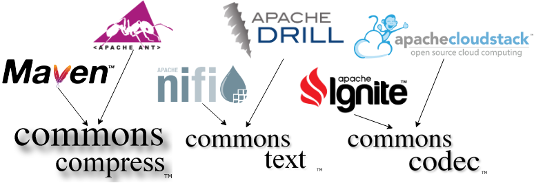
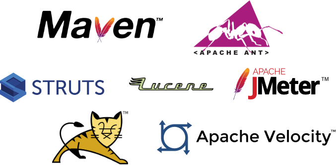

Apache Commons
State of the Union.
Created by Rob Tompkins (chtompki)
Presentation Address: https://bit.ly/32pqLmj
Who I am.
- chtompki@apache.org
- Apache Member
- Apache Commons PMC
- Software Developer (Java, DevOps)
- Mathematician/Logician (?, sure why not).
Agenda. What's this talk going to be about?
- Introduction
- Past
- Present
- Future
Introduction
The Apache Commons Mission
Provide a place for other ASF projects to come together, collaborate, and share common code.
Source of shared code
Popularity?
Maven download statistics (8/22/2019)- junit:junit - 91,366 usages
- org.slf4j:slf4j-api - 37,727 usages
- org.scala-lang:scala-library - 21,762 usages
- com.google.guava:guava - 20,913 usages
- com.android.support:appcompat-v7 - 18,616 usages
Popularity?
Maven download statistics (8/22/2019)- org.mockito:mockito-core - 17,156 usages
- commons-io:commons-io - 17,009 usages
- ch.qos.logback:logback-classic - 16,154 usages
- log4j:log4j - 14,633 usages
- org.clojure:clojure - 14,596 usages
Popularity?
Maven download statistics (8/22/2019)- org.apache.commons:commons-lang3 - 13,987 usages
- com.fasterxml.jackson.core:jackson-databind - 12,648 usages
- org.slf4j:slf4j-log4j12 - 12,571 usages
- org.mockito:mockito-all - 12,110 usages
- javax.servlet:javax.servlet-api - 11,276 usages
Past
Past
Past
Present
The fork of commons-math
New Math Components
- commons-rng
- commons-numbers
- commons-statistics
- commons-geometry
Other new(ish) components
- commons-text
- commons-crypto
Easier releases for committers
(everyone, all asf committers)
16 releases since beginning of 2019.
org.apache.commons
commons-release-plugin
1.6
Security Fixes
- commons-fileupload-1.4
- commons-codec-1.12
- commons-beanutils-1.9.4
- commons-compress-1.19
Git Migration
Future
Staying up to date with java
- Java 8
Java 9 & 10- Java 11
- Java 12, 13, ... ?
Remaining Stable